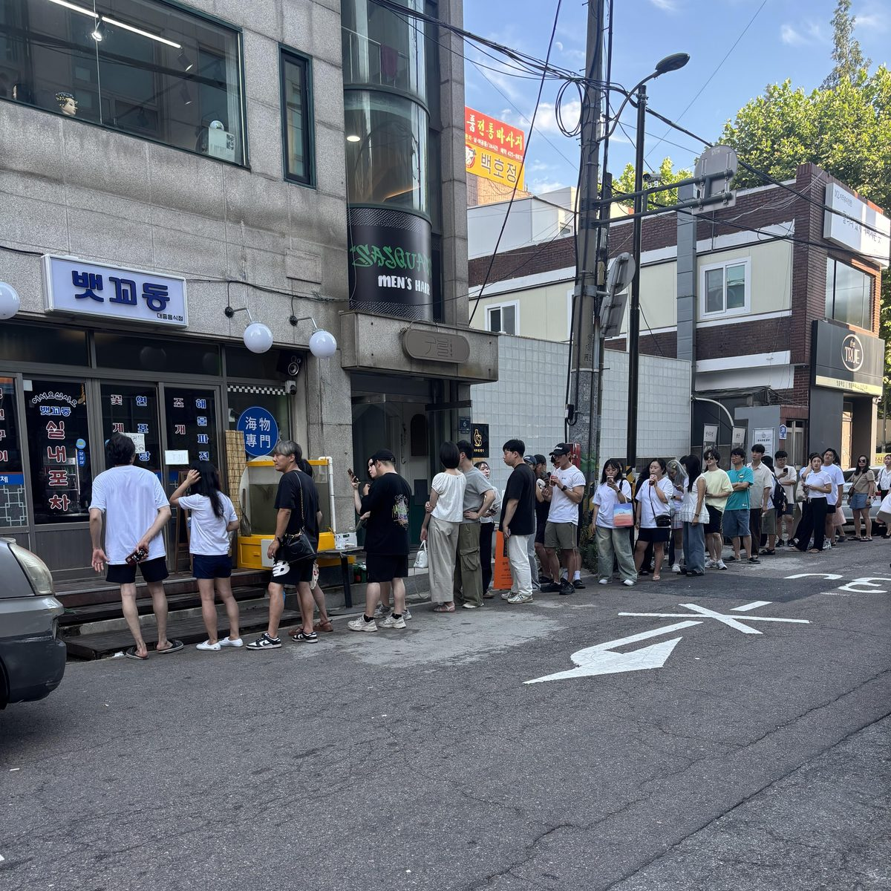

강청림chungrim.me
외식업 기획/컨설팅/앱서비스
Creative & Development
처음 온 분께
?
뭐 하시는 분이에요?
?
앱이요? 무슨 앱이에요?
 APP
APP?
가게는 어디에 있어요?


시작
?
뱃꼬동, 이름이 왜 뱃꼬동이에요?
?
첫 가게는 몇 살에 열었어요?
?
망할 뻔한 적 있어요?
뱃꼬동
?
웨이팅이 생기기 시작한 건 언제부터예요? 계기가 있었어요?

사람과 운영
?
가게가 여러 개면 매일 어디에 있어요?
?
동업을 하신다고 들었어요. 소개해 주세요. 싸우지는 않아요?
위스토어와 AI
?
가게를 운영하면서 앱까지 만드는 이유가 뭐예요?
?
AI를 잘 쓰시던데, 원래 컴퓨터 전공이에요?
?
AI 잘 쓰는 팁이 있으면 알려 주실 수 있나요?
그래서
?
컨설팅은 어떤 걸 하시는 거예요?
?
다음에 준비하고 있는 건 뭐예요?
?
더 물어봐도 돼요?